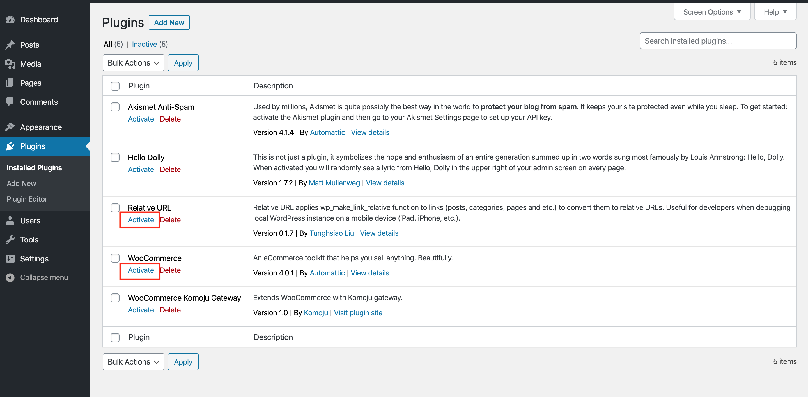
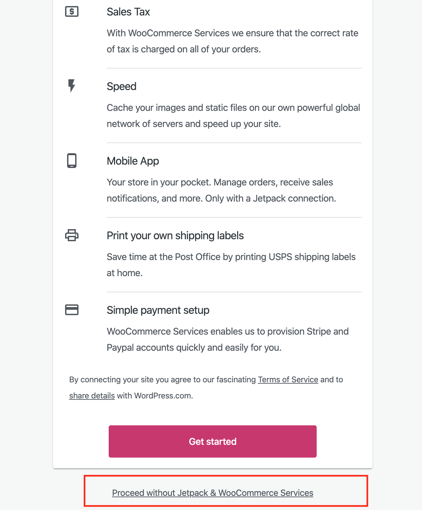
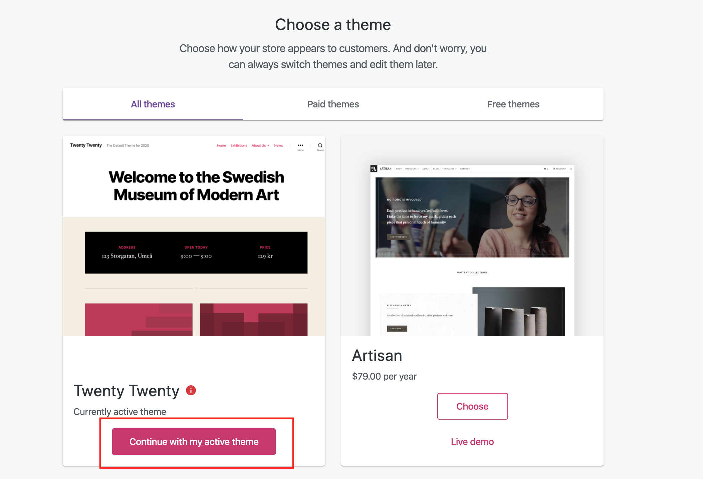

Dev Setup
This document provides a detailed setup guide for the development environment, including instructions for WordPress and WooCommerce. This was written on WordPress version 6.7.2 and WooCommerce 9.7.1
To begin, start the docker containers:
$ docker-compose up
This will download the docker images and WordPress plugins. Once the initial setup is done (docker is no longer constantly writing text to screen), you can navigate to 127.0.0.1:8000 to setup WordPress.
Note: It has to be 127.0.0.1, not localhost
Configuring Ngrok
Because the Komoju plugin uses webhooks to receive notifications once the payment is complete the wordpress instance will need to be accessible to the internet. This can be done with ngrok:
ngrok http -host-header=rewrite http://127.0.0.1:8000
Note: Accessing the website using the ngrok endpoint doesn't work particularly well, so you're better off using 127.0.0.1 to go through the checkout flow and just use ngrok for the webhook integration.
Setting up WordPress
Once on the WordPress setup screen you can fill in the details as you like (as long as you remember the username and password) then click "Install WordPress" on the bottom left.
Log in when prompted, and you should be directed to the admin page.
Setting up WooCommerce
- On the left sidebar, click Plugins.
- Under the "Relative URL" name, click "Activate" to turn the relative URL plugin on (this is used to get ngrok integration working properly)
-
Under "WooCommerce" click "Activate". This will take you to a new page with the WooCommerce setup: 
-
Click "Yes please" to start the setup.
-
On the "Start setting up your WooCommerce store" page, scroll to the very bottom and click the "Proceed without Jetpack & WooCommerce Services" link (we don't need these for our dev environment): 
-
When prompted with the "Build a Better WooCommerce" pop up just click continue without ticking the box.
-
Set up the address with fake data:

-
On the "In which industry does the store operate?" page, just select whatever you like and click "Continue"
-
On the "What type of products will be listed?" page, select Virtual or Physical: and click "Continue"

-
On "Tell us about your business", select an amount of products, then set "Currently selling elsewhere?" to No, and disable all the options that appear below it, then click "Continue":

-
On the "Choose a theme" page, just select "Continue with my active theme": 
-
You should be redirected back to the WordPress admin page.
- In the left Side panel, click on "WooCommerce", and then on the "Settings" submenu.
- Scroll down until you get to "Currency Options"
- Set the "Currency" field to "Japanese Yen (¥)"
- Click "Save changes" at the bottom:

Setting up the Komoju WooCommerce plugin
- On the WordPress admin page, click "Plugins" on the left side panel
- On the Plugins page click "Activate" under "WooCommerce Komoju Gateway"
- On the side panel, click "WooCommerce", then click the "Settings" submenu
- On the tabs in the main content click "Payments"
-
Next to "Komoju" click the "Enabled" toggle to turn on the Komoju integration, then click "Set up" to configure it:

-
Set up the API settings with the test Komoju account
Make sure that the Webhook is configured as per the README.
Adding a product to WooCommerce
To be able to test the checkout you will first need to have a purchasable product in your store.
- On the WordPress admin page, click on "Products" in the left side panel, then click the "Create product" button in the main content.
- Add a product name of your choosing
- Add a description
- Set the price of the object
- Click "Publish":

If you go to http://127.0.0.1:8000/?post_type=product you should be able to see the shop, with an item for purchase you can use to test the Komoju integration.